സൂര്യഗ്രഹണം
ആഘോോഷമാക്കി കേരളജനത
തിരുവനന്തപുരം: സൂര്യഗ്രഹണക്കാഴ്ച്ച കാണാന്
നൂറുകണക്കിനാളുകള് കനകക്കുന്ന് കൊൊട്ടാരത്തി
ലെത്തി. സംസ്ഥാനത്തിന്റെ വിവിധ ഭാഗങ്ങളില്
സ്കൂളുകൾ കേന്ദ്രീകരിച്ചും സൂര്യഗ്രഹണം കാണാന്
സംവിധാനമൊൊരുക്കിയിരുന്നു.
സൂര്യഗ്രഹണം എന്ന ആകാശവിസ്മയത്തെക്കുറിച്ചുള്ള വാർത്ത വായിച്ചില്ലേ. നിങ്ങള്
എപ്പപോഴെങ്കിലും സൂര്യഗ്രഹണമോോ ചന്ദ്രഗ്രഹണമോോ നിരീക്ഷിച്ചിട്ടുണ്ടടോ?
എങ്ങനെയാണ് ഗ്രഹണം സംഭവിക്കുന്നത്? ചർച്ച ചെയ്യൂ.
ഇത്തരം ആകാശക്കാഴ്ചകളെക്കുറിച്ചറിയാൻ ആദ്യയം നിഴലുകളെക്കുറിച്ച് ചില വസ്തുത
കൾ മനസ്സിലാക്കാം.
145
നിഴൽ
നിങ്ങൾ സ്വന്തം നിഴൽ കണ്ടിട്ടുണ്ടാവുമല്ലലോ? നിഴല്
ഉണ്ടാകുന്നത് എങ്ങനെയാണ്?
ചിത്രം നിരീക്ഷിക്കൂ.
u
മരത്തിന്റെ നിഴല് രാവിലെ ഏത് ദിശയിലായിരി
ക്കും കാണുന്നത്?
u
ഈ മരത്തിന്റെ നിഴൽ വൈകുന്നേരം ഏത് ദിശ
യിലായിരിക്കും?
u
നിഴലിന് ഉച്ചയ്ക്ക് എന്തുമാറ്റമാണ് ഉണ്ടാകുന്നത്?
ഓരോോ സമയത്തും മരത്തിന്റെ നിഴലിന്റെ വലിപ്പ
ത്തിനും ദിശയ്കക്കകും ഉണ്ടാകുന്ന മാറ്റം ശാസ്ത്രപുസ്തകത്തിൽ കുറിക്കൂ.
നിഴൽ നോക്കി ചിത്രത്തിൽ സൂര്യന്റെ സ്ഥാനം എവിടെയാണെന്ന് വരച്ചുചേർക്കൂ.
ഒരു വസ്തുവിന് എപ്പപോഴും ഒരേ ആകൃതിയിലുള്ള നിഴലാണോോ ഉണ്ടാകുന്നത്? ഒരു ലഘു
പരീക്ഷണം ചെയ്തുനോോക്കാം
ചിത്രം - 1
ചിത്രം - 2
ചിത്രം - 3
ഒരു വള ചിത്രം 1 ൽ കാണുന്നരീതിയിൽ പിടിച്ച്, അതിനുനേരെ ടോോർച്ച് പ്രകാശിപ്പിക്കൂ.
ഭിത്തിയിൽ പതിക്കുന്ന നിഴലിന്റെ ആകൃതി നിരീക്ഷിക്കൂ. ചിത്രം 2 ലും 3 ലും കാണുന്ന
രീതിയിൽ വള പിടിച്ച് ടോോർച്ച് പ്രകാശിപ്പിച്ച് നോോക്കൂ. മൂന്ന് സന്ദർഭങ്ങളിലും ഭിത്തിയിൽ
പതിയുന്ന നിഴലുകളുടെ ആകൃതി ഒരുപോോലെയാണോോ?
ഇതുപോോലെ ശാസ്ത്രകിറ്റിൽ നിന്ന് താഴെ പറയുന്ന വസ്തുക്കൾ ഉപയോോഗിച്ച് പരീക്ഷണം
ആവർത്തിക്കൂ.
സാമഗ്രികള് : പേന, ക്രിക്കറ്റ് ബോോൾ, ചില്ല്, ഇൻസ്ട്രമെന്റ് ബോോക്സ്, പ്ലേറ്റ്, സ്റ്റീൽഗ്ലാസ്,
ഫുട്്ബബോൾ.
ഓരോോ വസ്തുവും ചുമരിനുനേരെ പലരീതിയിൽ പിടിച്ച് അവയിലേക്ക് ടോോർച്ച് പ്രകാശി
പ്പിക്കൂ. നിരീക്ഷണം പട്ടികയില് രേഖപ്പെടുത്തൂ.
146
പട്ടിക വിശകലനം ചെയ്യൂ. എല്ലാ വസ്തുക്കൾക്കും നിഴൽ ഉണ്ടാകുന്നുണ്ടടോ?
നിഴൽ രൂപപ്പെടുന്നത് പ്രകാശസ്രരോതസ്സിന്റെ ഏത് വശത്താണ്?
എപ്പപോഴും ഒരേ ആകൃതിയിൽ നിഴൽ രൂപപ്പെടുന്നത് ഏതെല്ലാം വസ്തുക്കൾ ഉപയോോഗിച്ച
പ്പപോഴാണ്?
നിഴലും പ്രകാശവും
എല്ലാ അതാര്യവസ്തുക്കൾക്കും നിഴലുണ്ട്. പ്രകാശസ്രരോതസ്സിന്റെ എതിർദിശയിലായി
രിക്കും നിഴൽ രൂപപ്പെടുന്നത്. ഗോോളാകൃതിയുള്ള വസ്തുക്കൾക്ക് മാത്രമേ എപ്പപോഴും
വൃത്താകൃതിയിലുള്ള നിഴൽ ഉണ്ടാവുകയുള്ളൂ.
ചിത്രം നിരീക്ഷിച്ച് നിങ്ങളുടെ നിഴലിന്റെ വ്യത്യസ്ത രൂപങ്ങളുണ്ടാ
ക്കാൻ ശ്രമിച്ചുനോോക്കൂ.
ആകാശഗോോളങ്ങളുടെ നിഴല്
ഭൂമിയും ചന്ദ്രനും മറ്റ് ആകാശഗോോളങ്ങളും അതാര്യവസ്തുക്കളാണ
ല്ലലോ. ഇവയ്ക്ക് നിഴല് ഉണ്ടാവുമോോ?
പ്രകാശസ്രരോതസ്സായ സൂര്യൻ വളരെ വലുതാണെന്നും ഭൂമി സൂര്യനെ
അപേക്ഷിച്ച് വളരെ ചെറുതാണെന്നും നാം പഠിച്ചിട്ടുണ്ടല്ലലോ.
സൂര്യപ്രകാശം ഭൂമിയിലെത്തുന്നതിന്റെ രേഖാചിത്രം നിരീക്ഷിക്കൂ.
ഭൂമി സൂര്യപ്രകാശത്തെ കടത്തിവിടാത്തതിനാൽ മറുഭാഗത്ത് നിഴൽ ഉണ്ടാകുമല്ലലോ?
ഭൂമിയുടെ നിഴല് രൂപപ്പെടുന്ന ഭാഗം ചിത്രത്തിൽ A എന്ന് ഷേഡ് ചെയ്തിരിക്കുന്നത് നിരീ
ക്ഷിക്കൂ.
147
ഭൂമിയുടെ നിഴലിന്റെ ആകൃതി നോോക്കൂ. കോോണ് ഐസ്കക്രരീം കപ്പ് പോോലെ തോോന്നുന്നില്ലേ.
ഭൂമിയുടെ നിഴലുമായി ബന്ധപ്പെട്ട് ഇപ്പപോൾ നിങ്ങൾ മനസ്സിലാക്കിയ വസ്തുതകൾ എന്തതൊ
ക്കെയാണ്?
u
ഭൂമി ഒരു അതാര്യവസ്തു ആയതിനാൽ നിഴൽ രൂപപ്പെടുന്നു.
u
സൂര്യന് എതിർദിശയിലായിരിക്കും എപ്പപോഴും ഭൂമിയുടെ നിഴൽ രൂപപ്പെടുന്നത്.
u
അകലേക്ക് പോോകുന്തതോറും ഭൂമിയുടെ നിഴൽ ചെറുതായി ചെറുതായി ഇല്ലാതാകുന്നു.
ഭൂമിയുടെ നിഴലിന്റെ ആകൃതി എങ്ങനെയാണെന്ന് മനസ്സിലായല്ലലോ. ഭൂമിയുടെ നിഴല് രൂപ
പ്പെടുന്ന ഭാഗത്ത് പകലായിരിക്കുമോോ രാത്രിയായിരിക്കുമോോ? നിങ്ങളുടെ ഊഹം എഴുതൂ.
ടീച്ചറുമായി ചർച്ചചെയ്ത് നിങ്ങളുടെ ഊഹം ശരിയാണോോ എന്ന് പരിശോോധിക്കൂ.
ചിത്രം നിരീക്ഷിക്കൂ.
എല്ലാ ആകാശഗോോളങ്ങളുടെയും വലിപ്പം ഒരു
പോോലെയാണോോ? ആകാശഗോോളങ്ങളുടെ വലിപ്പ
വ്യത്യയാസം അനുസരിച്ച് അവയുടെ നിഴലിന്റെ
വലിപ്പത്തിനും വ്യത്യയാസം ഉണ്ടാകുന്നു.
വ്യയാഴം
ഭൂമി
ഭൂമിയുടെ നിഴലില് ചന്ദ്രൻ
ൻ
സൂര്യൻ
ശുക്ര
ഒരു ആകാശഗോോളത്തിൽ പ്രകാശം പതിയുന്ന
ഭാഗത്ത് പകലും നിഴല് ഉണ്ടാകുന്ന ഭാഗത്ത്
രാത്രിയും അനുഭവപ്പെടുന്നു.
ബുധൻ
ചന്ദ്രനും ഇതുപോോലെ നിഴൽ ഉണ്ടാവില്ലേ?
ചന്ദ്രൻ
ചൊൊവ്വ
ചന്ദ്രൻ ഭൂമിയെ പരിക്രമണം ചെയ്യുന്ന ഗോോളമാ
ണെന്ന് നമുക്കറിയാം. ചന്ദ്രൻ ഭൂമിയെ പരിക്ര
മണം ചെയ്യുമ്പപോൾ ഭൂമിയുടെ നിഴലിൽ ചന്ദ്രന് വരാന് സാധ്യതയുള്ള സ്ഥാനം താഴെ
പറയുന്നവയിൽ ഏതാണ്?
ചന്ദ്രൻ
ഭൂമി
ഭൂമി
സൂര്യൻ
ചന്ദ്രൻ
സൂര്യൻ
ചിത്രം - A
ചന്ദ്രൻ സൂര്യനും ഭൂമിക്കും ഇടയിൽ വരുന്നു
ചിത്രം - B
ഭൂമി സൂര്യനും ചന്ദ്രനും ഇടയിൽ വരുന്നു
148
Page 45
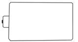
Figure fig_ch03_p045_01 (Page 45)
ക്ലാസ് - VII
ചർച്ച ചെയ്ത് നിങ്ങളുടെ ഉത്തരം ശാസ്ത്രപുസ്തകത്തിൽ രേഖപ്പെടുത്തൂ.
താഴെക്കകൊടുത്തിട്ടുള്ള ചിത്രത്തിൽ സൂര്യന്, ഭൂമി എന്നീ ആകാശഗോോളങ്ങളും ചന്ദ്രന്റെ
പരിക്രമണ പാതയുമാണുള്ളത്. ചന്ദ്രന് ഭൂമിക്കുചുറ്റും പരിക്രമണം ചെയ്യുന്ന പാതയിലെ
വിവിധ സ്ഥാനങ്ങളാണ് B, C, D എന്നിവ.
u
ഇവയിൽ ഏത് സ്ഥാനത്ത് എത്തുമ്പപോഴാണ് ചന്ദ്രൻ ഭൂമിയുടെ നിഴലിൽ പ്രവേശിക്കു
ന്നത്? B
u
ഏത് സ്ഥാനത്ത് എത്തുമ്പപോഴാണ് ചന്ദ്രൻ പൂർണ്ണമായും ഭൂമിയുടെ നിഴലിൽ
വരുന്നത്?
u
ചന്ദ്രൻ ഭൂമിയുടെ നിഴലിൽനിന്ന് പൂർണ്ണമായും പുറത്തെത്തുന്ന സ്ഥാനം ഏത്?
മുകളിലെ ചിത്രത്തിൽ സൂര്യപ്രകാശം പതിയുന്ന ചന്ദ്രന്റെ ഭാഗമാണ് ഭൂമിക്ക് അഭിമുഖ
മായി വരുന്നത്. ഈ ദിവസം ഭൂമിയിൽ നിന്ന് ചന്ദ്രനെ കാണാൻ സാധിക്കും. എന്നാല്
C എന്ന സ്ഥാനത്ത് എത്തുമ്പപോള് ചന്ദ്രനെ കാണാന് കഴിയില്ലല്ലലോ. എന്തുകൊൊണ്ട്?
ഭൂമിയുടെ നിഴലിൽ ചന്ദ്രൻ വരുന്നതുകൊൊണ്ടല്ലേ ഇങ്ങനെ സംഭവിക്കുന്നത്.
ചന്ദ്രഗ്രഹണം (Lunar Eclipse)
ചന്ദ്രൻ ഭൂമിയെ പരിക്രമണം ചെയ്യുമ്പപോൾ ചില സമയങ്ങളില് ഭൂമി സൂര്യനും ചന്ദ്രനും ഇടയില്
നേർരേഖയിൽ വരുന്നു. ഈ സമയം ഭൂമിയുടെ നിഴലിലായിരിക്കും ചന്ദ്രന്. ഇതാണ് ചന്ദ്രഗ്രഹണം.
ആകാശത്ത് ദൃശ്യമാകുന്ന മനോോഹര പ്രതിഭാസങ്ങളിൽ ഒന്നാണ് ചന്ദ്രഗ്രഹണം. പൂർണഗ്ര
ഹണ സമയത്ത് ചന്ദ്രന് ഓറഞ്ചുകലർന്ന ചുവപ്പുനിറത്തിൽ മങ്ങിയാണ് കാണപ്പെടുന്നത്.
ഇനി വരുന്ന ചന്ദ്രഗ്രഹണം നിങ്ങളെല്ലാവരും മറക്കാതെ നിരീക്ഷിക്കുമല്ലലോ.
149
Page 46
Figure fig_ch03_p046_01 (Page 46)
അടിസ്ഥാനശാസ്ത്രം
ഭൂമിയും ചന്ദ്രന്റെ നിഴലും
സൂര്യനും ഭൂമിക്കുമിടയിൽ ചന്ദ്രൻ നേർരേഖയിൽ വരുമ്പപോൾ എന്താണ് സംഭവിക്കുക?
ഭൂമിയെക്കാൾ ചെറിയ ഗോോളമാണല്ലലോ ചന്ദ്രൻ. ചന്ദ്രന്റെ നിഴലിന് ഭൂമിയെ പൂർണ്ണമായും
മറയ്ക്കാൻ സാധിക്കുമോോ? ചിത്രം നിരീക്ഷിച്ച് നിങ്ങളുടെ നിഗമനം ശാസ്ത്രപുസ്തകത്തിൽ
രേഖപ്പെടുത്തൂ.
സൂര്യൻ
ചന്ദ്രൻ
ചന്ദ്രന്റെ നിഴൽ
ഭൂമിയിൽ പതിക്കുന്ന
ഭാഗം
ഭൂമി
ചന്ദ്രന്റെ നിഴൽ ഭൂമിയെ പൂർണമായും മറയ്ക്കുന്നില്ല എന്ന് മനസ്സിലായല്ലോ. ഭൂമിയിൽ
ചന്ദ്രന്റെ നിഴൽ വീഴുന്ന ഭാഗത്തുള്ളവർക്ക് ആ സമയം സൂര്യനെ കാണാന് കഴിയുമോോ?
ചന്ദ്രൻ സൂര്യനെ മറയ്ക്കുന്നതുകൊൊണ്ടാണ് ആ സമയം സൂര്യനെ കാണാൻ സാധിക്കാത്തത്.
ഇതാണ് സൂര്യഗ്രഹണം. ഈ പ്രതിഭാസം പകലാണോോ രാത്രിയാണോോ സംഭവിക്കുന്നത്?
ചിത്രം വിശകലനം ചെയ്ത് നിഗമനം രൂപീകരിച്ച് ക്ലാസിൽ ചർച്ച ചെയ്യൂ.
സൂര്യഗ്രഹണം (Solar Eclipse)
ഭൂമിയെ പരിക്രമണം ചെയ്യുമ്പപോൾ ചന്ദ്രൻ അപൂർവമായി ഭൂമിക്കും
സൂര്യനും ഇടയിൽ നേർരേഖയിൽ വരുന്നു. ഈ സമയം ചന്ദ്രന്റെ നിഴൽ
ഭൂമിയില് വീഴുന്നു. ചന്ദ്രന്റെ നിഴൽ വീഴുന്ന പ്രദേശത്തുള്ളവർക്ക് ചന്ദ്രന്റെ
മറവ് കാരണം സൂര്യനെ കാണാന് സാധിക്കുകയില്ല. ഇതാണ് സൂര്യഗ്രഹ
ണം. ചന്ദ്രന്റെ നിഴൽ വീഴുന്ന ഭൂപ്രദേശത്തുള്ളവർക്ക് മാത്രമാണ് സൂര്യഗ്രഹ
ണം ദൃശ്യമാകുന്നത്.
പൂർണ്ണസൂര്യഗ്രഹണവും വലയസൂര്യഗ്രഹണവും ഭാഗികസൂര്യഗ്രഹണവും നമുക്ക് ദൃശ്യമാ
കാറുണ്ട്. നൽകിയിരിക്കുന്ന ചിത്രം ഗ്രൂപ്പിൽ വിശകലനം ചെയ്ത് ഇവയുടെ സവിശേഷത
കൾ ചർച്ച ചെയ്ത് ശാസ്ത്രപുസ്തകത്തിൽ എഴുതൂ.
സൂര്യഗ്രഹണ നിരീക്ഷണം
പത്രങ്ങളില് സൂര്യഗ്രഹണവുമായി ബന്ധപ്പെട്ട് വരാറുള്ള വാർത്തകള് ശ്രദ്ധിച്ചിരിക്കു
മല്ലലോ. നിരീക്ഷണത്തിന് അനുയോോജ്യമായ സ്ഥലവും പാലിക്കേണ്ട മുൻകരുതലുകളും
വാര്ത്തകളില് വരാറുണ്ട്.
സൂര്യഗ്രഹണം എങ്ങനെയെല്ലാം സുരക്ഷിതമായി നിരീക്ഷിക്കാം. താഴെപ്പറയുന്ന കുറിപ്പ്
വായിച്ച് നിങ്ങളുടെ കണ്ടെത്തല് ശാസ്ത്രപുസ്തകത്തില് എഴുതൂ.
നിരീക്ഷണമാർഗങ്ങൾ
ചന്ദ്രഗ്രഹണം നേരിട്ട് നിരീക്ഷിക്കാം. എന്നാല് സൂര്യഗ്രഹണം സുരക്ഷിത മാർഗങ്ങളി
ലൂടെയല്ലാതെ നിരീക്ഷിക്കുന്നത് കണ്ണിന് ഹാനികരമാണ്. അതിനാല് ഫിൽട്ടറുകൾ
ഉപയോോഗിച്ചും വിവിധ രീതിയിൽ സൂര്യരശ്മികള് പ്രതിപതിപ്പിച്ചും മാത്രമേ സൂര്യ
ഗ്രഹണം നിരീക്ഷിക്കാവൂ. ടെലിസ്കകോപ്പ്, ബൈനോോക്കുലർ എന്നിവയില് ഗുണമേന്മയു
ള്ള ഫിൽട്ടറുകൾ ഉപയോോഗിച്ചും ഗ്രഹണം നിരീക്ഷിക്കാം. അലങ്കാരങ്ങൾക്കുപയോോ
ഗിക്കൂന്ന ഗ്ലിറ്റർ പേപ്പറുകൾ, സുരക്ഷിതമല്ലാത്ത എക്സ്-റേ ഫിലിമുകൾ എന്നിവ
സൂര്യഗ്രഹണ നിരീക്ഷണത്തിന് ഉപയോോഗിക്കരുത്.
സോോളാർ ഫിൽറ്റർ കണ്ണട
പിൻഹോോൾ പ്രരൊജക്ടർ
ടെലിസ്കകോപ്പിൽ
ഉപയോോഗിക്കുന്ന
സോോളാർ ഫിൽറ്റർ
151
ടെലിസ്കകോപ്പ് ഉപയോോഗിച്ചുള്ള
പ്രരൊജക്ഷൻ രീതി
Page 48
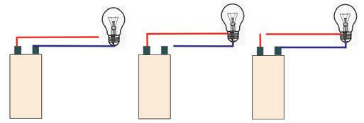
Figure fig_ch03_p048_01 (Page 48)
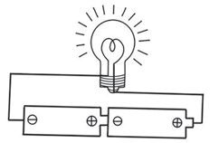
Figure fig_ch03_p048_02 (Page 48)
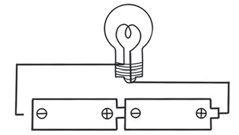
Figure fig_ch03_p048_03 (Page 48)
അടിസ്ഥാനശാസ്ത്രം
അധികവായനയ്ക്ക്
ഗ്രഹണം മുൻകൂട്ടി അറിയാം
ഗ്രഹണം മുൻകൂട്ടി അറിയാന് ഒട്ടേറെ സോോഫ്റ്റ് വെയറുകളുംം ആപ്പുകളുംം ലഭ്യയമാണ്.
ഇത്തരം ആപ്പുകളോോ സോോഫ്റ്റ്വെയറുകളോോ ഉപയോോഗിച്ച് ഗ്രഹണം ഏറ്റവും മനോോ
ഹരമായി കാണാന് കഴിയുന്നത് എവിടെ ഏത് സമയത്താണെന്ന് നമുക്ക് മുൻകൂട്ടി
കണ്ടെത്താം. കഴിഞ്ഞുപോോയ ഗ്രഹണങ്ങളുടെ ദൃശ്യയങ്ങൾ വീണ്ടും കാണാനും ഇവ
യിലൂടെ കഴിയും.
നിലാവിന്റെ പൊൊരുൾ
രാത്രി ആകാശത്ത് മനോോഹരമായി പ്രകാശിക്കുന്ന
ചന്ദ്രനെ കണ്ടിട്ടില്ലേ?
സ്വയം പ്രകാശിക്കാത്ത ചന്ദ്രന് എങ്ങനെയാണ് ഭംഗിയായി
ശോോഭിക്കാൻ കഴിയുന്നത്?
ചിത്രം നിരീക്ഷിക്കൂ. ചന്ദ്രന്റെ ശോഭയുടെ കാരണം
എന്തായിരിക്കും?
താഴെ കൊൊടുത്തിരിക്കുന്ന ചിത്രത്തിൽ സൂര്യപ്രകാശം ഒരേ
സമയം ഭൂമിയിലും ചന്ദ്രനിലും പതിക്കുന്നത് കാണുന്നില്ലേ?
ഇവ അതാര്യവസ്തുക്കളായതിനാൽ പ്രകാശത്തെ പ്രതിപതിപ്പിക്കില്ലേ?
ചന്ദ്രനിൽ പതിക്കുന്ന പ്രകാശം പ്രതിപതിച്ച് ഭൂമിയിലെത്തുന്നതാണ് ചിത്രത്തിൽ കാണു
ന്നത്.
152
Page 49
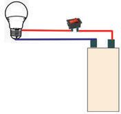
Figure fig_ch03_p049_01 (Page 49)
ക്ലാസ് - VII
സൂര്യപ്രകാശം ചന്ദ്രനില്ത്തട്ടി പ്രതിപതിച്ചുവരുന്നതാണ് നിലാവെളിച്ചം. ചന്ദ്രന്റെ ഉപ
രിതലം പരുപരുത്തതാണ്. അങ്ങനെയെങ്കിൽ നിലാവെളിച്ചം ഉണ്ടാകുന്നത് ക്രമപ്രതിപ
തനം മൂലമാണോോ വിസരിതപ്രതിപതനം മൂലമാണോോ? ചർച്ച ചെയ്ത് ശാസ്ത്രപുസ്തകത്തിൽ
എഴുതൂ.
നിലാവ് (Moonlight)
ചന്ദ്രോപരിതലത്തിൽ പതിക്കുന്ന സൂര്യപ്രകാശം വിസരിതമായി പ്രതിപതിച്ച് ഭൂമി
യിലെത്തുന്നതാണ് നാം രാത്രിയിൽ കാണുന്ന നിലാവ്.
നിലാവ് കൂടുതലുള്ള രാത്രികളും നിലാവ് തീരെയില്ലാത്ത രാത്രികളും നിങ്ങൾ അനുഭവി
ച്ചറിഞ്ഞിട്ടുണ്ടല്ലോ. എന്താണിതിനു കാരണമെന്ന് അറിയാൻ നമുക്ക് ശ്രമിക്കാം.
ചന്ദ്രന്റെ കലകള്
സൂര്യനെ നമ്മള് എല്ലാ ദിവസവും കാണുന്നത് ഒരേ ആകൃതിയിലല്ലേ? എന്നാല് ചന്ദ്രനെ
കാണുന്നതോോ?
വിവിധ ദിവസങ്ങളിൽ കാണുന്ന ചന്ദ്രന്റെ ആകൃതി നിരീക്ഷിച്ച് ശാസ്ത്രപുസ്തകത്തിൽ വരയ്ക്കൂ.
ഗോോളാകൃതിയിലുള്ള ചന്ദ്രനെ എന്തുകൊൊണ്ടാണ് വിവിധ ദിവസങ്ങളില് വ്യത്യസ്ത ആകൃതി
യില് കാണുന്നത്? നമുക്ക് ഒരു പ്രവർത്തനം ചെയ്തുനോോക്കാം.
ആവശ്യമായ സാമഗ്രികള് : മൂന്ന് സ്മൈലിബോോളുകള്, കറുത്ത പെയിന്റ്
താഴെക്കകൊടുത്തിരിക്കുന്ന ചിത്രങ്ങളും ബോോക്സുകളിലെ കുറിപ്പുകളും പരിശോോധിച്ച്
സ്മൈലിബോോളുകളുടെ പകുതിഭാഗം കറുത്ത പെയിന്റടിക്കൂ.
സ്മൈലി ഫെയ്സിന്റെ
മറുവശം പൂർണമായും
പെയിന്റ് ചെയ്യുക
സ്മൈലി ഫെയ്സിന്റെ
പകുതിഭാഗം മറയുന്ന വിധം
പെയിന്റ് ചെയ്യുക
സ്മൈലി ഫെയ്സ് മുഴുവൻ
മറയുന്നവിധം പെയിന്റ്
ചെയ്യുക
കറുത്ത പെയിന്റ് ചെയ്തഭാഗം സൂചിപ്പിക്കുന്നത് ചന്ദ്രന്റെ നിഴൽഭാഗവും പെയിന്റ് ചെയ്യാത്ത
ഭാഗം സൂചിപ്പിക്കുന്നത് ചന്ദ്രനില് പ്രകാശം പതിക്കുന്ന ഭാഗവും ആണ്.
153
Page 50
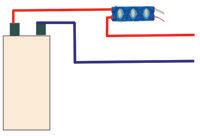
Figure fig_ch03_p050_01 (Page 50)
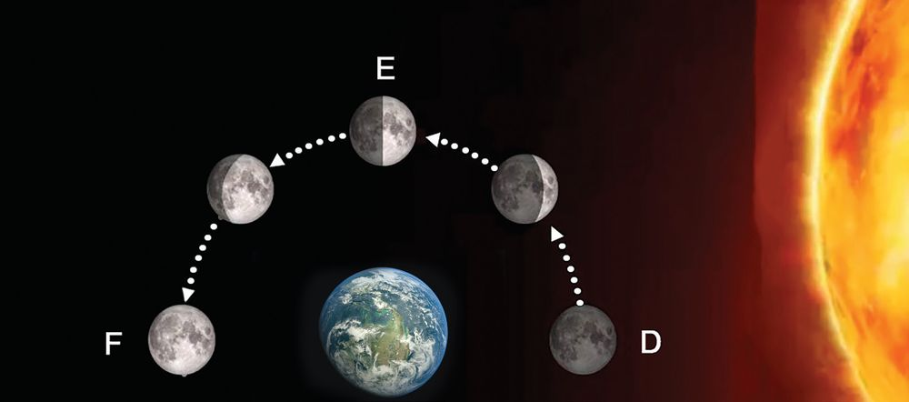
Figure fig_ch03_p050_02 (Page 50)
അടിസ്ഥാനശാസ്ത്രം
താഴെ ചിത്രത്തിൽ കാണുന്നവിധം ബോോളുകൾ ക്ലാസിൽ കിഴക്ക് പടിഞ്ഞാറ് ദിശയിൽ
വയ്ക്കുക. സ്മൈലിബോോളിന്റെ പെയിന്റ് ചെയ്യാത്ത ഭാഗം പ്രകാശത്തിന് അഭിമുഖമായും
കറുത്ത പെയിന്റ് ചെയ്ത ഭാഗം പ്രകാശത്തിന് എതിർവശത്തും വരണം. സ്മൈലി ബോോൾ
ചന്ദ്രനാണ്
എന്നും ബൾബ്
B
C
സൂര്യനാണ്
A
എന്നും സങ്കല്പി
ക്കുക. ചന്ദ്രന്
ഭൂമിയെ പരി
ക്രമണം ചെയ്യു
മ്പപോള് വരുന്ന
സ്ഥാനങ്ങളാണ്
A, B, C.
A, C
കിഴക്ക്
പടിഞ്ഞാറ്
എന്നീ
ബോോളുകൾക്ക് മധ്യത്തിൽ കുട്ടി ഇരുന്ന് നിരീക്ഷിക്കണം.
ചിത്രം അനുസരിച്ച് കുട്ടി മൂന്ന് ബോോളുകളെയും കാണുന്നത് എങ്ങനെയായിരിക്കും?
നിഴൽഭാഗം പൂർണ്ണമായും കുട്ടിക്ക് കാണാൻ സാധിക്കുന്നത് ഏത് ബോോളിലാണ്?
പകുതി പ്രകാശഭാഗവും പകുതി നിഴൽഭാഗവും കാണുന്നത് ഏത് സ്ഥാനത്തുവച്ച
ബോോളിലാണ്?
പ്രകാശം പതിയുന്ന ഭാഗം പൂർണ്ണമായും കുട്ടിക്ക് കാണാൻ സാധിക്കുന്നത് ഏത്
ബോോളിലാണ്?
ഒരു കുട്ടി വിവിധ ദിവസങ്ങളില് സൂര്യയാസ്തമയശേഷം ചന്ദ്രനെ ആകാശത്ത് കണ്ട
സ്ഥാനവും ആകൃതിയുമാണ് ചുവടെ കൊൊടുത്തിരിക്കുന്നത്. തന്നിരിക്കുന്ന ചിത്രത്തെ
നിങ്ങൾ ചെയ്ത പ്രവർത്തനത്തെ അടിസ്ഥാനമാക്കി വിശകലനം ചെയ്യൂ.
ഓരോോ സ്ഥാനത്തെത്തുമ്പപോഴും ചന്ദ്രന്റെ പ്രകാശിതഭാഗം ഭൂമിയിൽനിന്ന് കാണുന്നത്
വ്യത്യയാസപ്പെടുന്നില്ലേ?
താഴെക്കകൊടുത്ത പട്ടിക പരിശോോധിച്ച് നിങ്ങളുടെ നിഗമനങ്ങൾ ശാസ്ത്രപുസ്തകത്തിൽ
രേഖപ്പെടുത്തൂ.
ചന്ദ്രൻ D എന്ന സ്ഥാനത്ത് ചന്ദ്രന്റെ നിഴൽഭാഗം പൂർണ്ണമായും
എത്തുമ്പോൾ
ഭൂമിക്ക് അഭിമുഖമായിവരുന്നു.
ചന്ദ്രൻ E എന്ന സ്ഥാനത്ത് പകുതി പ്രകാശിത ഭാഗവും പകുതി നിഴൽ
എത്തുമ്പോൾ
ഭാഗവും ഭൂമിക്ക് അഭിമുഖമായി വരുന്നു.
ചന്ദ്രൻ F എന്ന സ്ഥാനത്ത്
എത്തുമ്പോൾ
പ്രകാശിതഭാഗം പൂർണ്ണമായി ഭൂമിക്ക്
അഭിമുഖമായി വരുന്നു.
അമാവാസിയും പൗർണ്ണമിയും (New Moon and Full Moon)
ചന്ദ്രന്റെ നിഴൽഭാഗം പൂർണ്ണമായും ഭൂമിക്കഭിമുഖമായി വരുന്ന ദിവസമാണ് അമാവാസി
(കറുത്തവാവ്). ഈ ദിവസം നമുക്ക് ചന്ദ്രനെ കാണാൻ സാധിക്കില്ല. ചന്ദ്രന്റെ പ്രകാ
ശിതഭാഗം പൂർണ്ണമായും ഭൂമിക്ക് അഭിമുഖമായി വരുന്നതാണ് പൗർണ്ണമി (വെളുത്ത
വാവ്). ചന്ദ്രന്റെ പ്രകാശിത ഭാഗത്തിന്റെ പകുതിയും നിഴൽഭാഗത്തിന്റെ പകുതിയും
ഭൂമിക്കഭിമുഖമായി വരുമ്പപോൾ കാണുന്നതാണ് അർധചന്ദ്രൻ.
വൃദ്ധിയും ക്ഷയവും (Waxing and Waning)
സൂര്യപ്രകാശം
സൂര്യപ്രകാശം
ചുവടെ തന്നിരിക്കുന്ന ചിത്രങ്ങള് നിരീക്ഷിക്കൂ. അമാവാസി മുതൽ പൗർണ്ണമിവരെയും
പൗർണ്ണമി മുതൽ അമാവാസിവരെയുമുള്ള ചന്ദ്രന്റെ പരിക്രമണം രണ്ട് ചിത്രങ്ങളിലായി
നൽകിയിരിക്കുന്നു. രണ്ടു ചിത്രങ്ങളും ഒരുപോോലെയാണോോ? ചിത്രങ്ങളില് എന്തെല്ലാം
വ്യത്യയാസമാണ് നിങ്ങൾക്ക് നിരീക്ഷിക്കാൻ സാധിക്കുന്നത്?
ചിത്രം A
ചിത്രം B
ഏത് ചിത്രത്തിലാണ് ചന്ദ്രന്റെ പ്രകാശിതഭാഗം ഭൂമിയിൽനിന്ന് നോോക്കുമ്പപോൾ വർധിച്ചു
വരുന്നതായി കാണുന്നത്?
ഏതു ചിത്രത്തിലാണ് പ്രകാശിതഭാഗം ഭൂമിയിൽനിന്ന് നോോക്കുമ്പപോൾ കുറഞ്ഞു വരുന്ന
തായി കാണുന്നത്?
155
Page 52
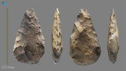
Figure fig_ch03_p052_01 (Page 52)
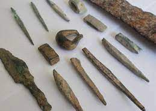
Figure fig_ch03_p052_02 (Page 52)
അടിസ്ഥാനശാസ്ത്രം
വൃദ്ധിക്ഷയം
ചന്ദ്രന്റെ പ്രകാശിതഭാഗം ഭൂമിയിൽനിന്ന് കാണുന്നത് കറുത്തവാവ് മുതൽ വെളുത്തവാവ് വരെ
കൂടി വരുന്നു. ഈ കാലയളവാണ് വൃദ്ധി അഥവാ വെളുത്തപക്ഷം.
ചന്ദ്രന്റെ പ്രകാശിതഭാഗം ഭൂമിയിൽനിന്ന് കാണുന്നത് വെളുത്തവാവ് മുതൽ കറുത്തവാവ് വരെ
കുറഞ്ഞുവരുന്നു. ഈ കാലയളവാണ് ക്ഷയം അഥവാ കറുത്തപക്ഷം.
ഭൂമിയെ പരിക്രമണം ചെയ്യുന്ന ചന്ദ്രന്റെ പ്രകാശിതഭാഗവും നിഴൽഭാഗവും ഭൂമിയിൽനിന്ന്
കാണുന്നതിന്റെ വ്യത്യയാസമാണ് വൃദ്ധിക്ഷയം.
അധികവായനയ്ക്ക്
ചന്ദ്രനിൽ ഇറങ്ങിയ ഇന്തത്യൻ വിസ്മയം
ചന്ദ്രന്റെ ദക്ഷിണധ്രുവത്തിനരികിൽ ആദ്യമാ
യി ഇറങ്ങുന്ന പേടകമാണ് ഇന്തത്യയുടെ അഭി
മാനമായ ചന്ദ്രയാൻ - 3. 2023 ജൂലൈ 14 ന്
വിക്ഷേപിച്ച ചന്ദ്രയാൻ - 3, 2023 ആഗസ്റ്റ്
23 ന് ചന്ദ്രന്റെ ദക്ഷിണധ്രുവത്തിനരികിൽ
സുരക്ഷിതമായി ഇറങ്ങി. ചന്ദ്രനിൽ സോോഫ്റ്റ്
ലാന്റിംഗ് നടത്തിയ നാലാമത്തെ രാജ്യയം
കൂടിയാണ് ഇന്തത്യ. ഭാവിയിൽ ചന്ദ്രനിൽനി
ന്ന് പാറയും മണ്ണും ഭൂമിയിലെത്തിക്കാനുള്ള
ചന്ദ്രയാൻ ദൗത്യങ്ങളുമായി ഐ.എസ്.ആർ.ഒ.
മുന്നേറുകയാണ്. മനുഷ്യനെ ബഹിരാകാശത്തെത്തിക്കാനുള്ള ഗഗൻയാൻ, ചൊൊവ്വാ
പര്യവേഷണവാഹനമായ മംഗൾയാൻ - 2 എന്നിവയെല്ലാം ഐ.എസ്.ആർ.ഒ.യുടെ
ഭാവി ദൗത്യങ്ങളാണ്. ഇന്തത്യയുടെ ബഹിരാകാശ ദൗത്യങ്ങളെക്കുറിച്ച് ഐ.എസ്.
ആർ.ഒ.യുടെ ഒൗദ്യോഗിക വെബ്സൈറ്റായ isro.gov.in ൽ നിന്ന് വിവരങ്ങൾ
ശേഖരിക്കൂ.
കലണ്ടര് നോോക്കാം
ചന്ദ്രന്റെ അമാവാസി ദിനവും പൗർണ്ണമി ദിനവും കലണ്ടറിൽ നോോക്കി എങ്ങനെ കണ്ടെത്താം?
എന്ത് അടയാളമാണ് ഈ ദിനങ്ങളെ സൂചിപ്പിക്കാൻ കലണ്ടറിൽ ഉപയോോഗിക്കാറുള്ളത്?
കലണ്ടറിൽ അമാവാസി രേഖപ്പെടുത്താൻ എന്ന അടയാളവും പൗർണ്ണമി അടയാളപ്പെ
ടുത്താൻ എന്ന അടയാളവുമാണ് ചേർക്കുന്നത്. നൽകിയിരിക്കുന്ന കലണ്ടർ നിരീക്ഷി
ക്കൂ. ഈ അടയാളങ്ങൾ കലണ്ടറിൽ കാണുന്നില്ലേ? പൗർണ്ണമിയിൽനിന്ന് അമാവാസിവ
രെഎത്താൻ ചന്ദ്രന് എത്ര ദിവസം വേണം എന്ന് കലണ്ടർ നോോക്കി കണ്ടെത്താമോോ?
156
Page 53
Figure fig_ch03_p053_01 (Page 53)
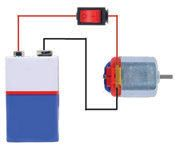
Figure fig_ch03_p053_02 (Page 53)
ക്ലാസ് - VII
കലണ്ടറിൽ പൗർണ്ണമി രേഖപ്പെടുത്തിയ മേയ്
തീയതി
5
അമാവാസി രേഖപ്പെടുത്തിയ
തീയതി
പൗർണ്ണമിയിൽനിന്ന് അമാവാസിയിൽ
എത്താൻ എടുത്ത ദിവസങ്ങളുടെ എണ്ണം
അടുത്ത മാസത്തെ കലണ്ടർ കൂടി പരിശോോധിക്കൂ. പൗർണ്ണമിയിൽനിന്ന് തൊൊട്ടടുത്ത
അമാവാസിയിലേക്ക് എത്താൻ ചന്ദ്രന് എത്രദിവസം വേണം എന്ന് കലണ്ടർ നോോക്കി
കണ്ടെത്താമോോ?
പൗർണ്ണമി രേഖപ്പെടുത്തിയ തീയതി
അമാവാസി രേഖപ്പെടുത്തിയ തീയതി
രണ്ടു കലണ്ടറും പരിശോോധിച്ച് ഒരു
അമാവാസിയിൽനിന്ന് തൊൊട്ടടുത്ത
അമാവാസിവരെ എത്താൻ എടുത്ത
ദിവസങ്ങളുടെ എണ്ണം
ഒരു അമാവാസിയിൽ നിന്ന് അടുത്ത അമാവാസിയിലെത്താന് ഇവിടെ 30 ദിവസമെടു
ത്തില്ലേ.
ഭൂമിയെ ഒരു തവണ പരിക്രമണം ചെയ്യാന് ചന്ദ്രന് 27 13 ദിവസമാണ് വേണ്ടത്.
എന്താണ് ഈ വ്യത്യയാസത്തിന് കാരണം? ചർച്ച ചെയ്യൂ.
അമാവാസി മുതല് അമാവാസി വരെ
ഭൂമിക്ക് ഒരുതവണ സൂര്യനെ പരിക്രമണം ചെയ്യാന് 365 14 ദിവസം വേണം. ചന്ദ്രൻ
ഭൂമിയെ ഒരുതവണ പരിക്രമണം ചെയ്യുമ്പപോള് ഭൂമി ചന്ദ്രനുമൊൊത്ത് സൂര്യനുചുറ്റും പരി
ക്രമണ പാതയില് കുറച്ച് ദൂരം സഞ്ചരിച്ചിട്ടുണ്ടാവും. ഭൂമിക്കുണ്ടാകുന്ന ഈ സ്ഥാനമാറ്റം
കാരണം ചന്ദ്രക്കലകള് ആവർത്തിച്ചുകാണാന് ചന്ദ്രന് അതേ പാതയിൽ കുറച്ചുകൂടി ദൂരം
സഞ്ചരിക്കേണ്ടിവരുന്നു. ഇതിന് രണ്ടുദിവസത്തിലധികം സമയം വേണ്ടിവരും. അതുകൊൊ
ണ്ടാണ് കറുത്തവാവുമുതല് അടുത്ത കറുത്തവാവു വരെ 29 12 ദിവസങ്ങള് വരുന്നത്.
കലണ്ടറിൽ തുടർന്നുള്ള മാസങ്ങൾ കൂടി പരിശോോധിക്കൂ. നിങ്ങൾ കണ്ടെത്തിയത് ശരി
യല്ലേ?
157
നിരീക്ഷിക്കാം
മാനത്തെ മനോോഹരകാഴ്ചകളുടെ കാരണങ്ങളാണ് നാം അന്വവേഷിച്ചത്. ഈ മാസത്തെ
കലണ്ടര് അനുസരിച്ച് കറുത്തവാവുമുതല് വെളുത്തവാവുവരെ സൂര്യയാസ്തമയശേഷം ചന്ദ്ര
നെ നിരീക്ഷിക്കൂ. നിങ്ങൾ നേരിട്ട് മനസ്സിലാക്കിയ കാര്യങ്ങൾ കൂട്ടുകാരുമായി പങ്കുവയ്ക്കൂ.
വിലയിരുത്താം
1.
ചിത്രം നിരീക്ഷിക്കൂ. ഭൂമിയെ ചുറ്റുന്ന ചന്ദ്രന്റെ പരിക്രമണപാത പരിശോോധിച്ച് താഴെ
കൊടുത്തിരിക്കുന്ന പട്ടികപൂർത്തിയാക്കൂ.
ചന്ദ്രഗ്രഹണം
തുടങ്ങുന്ന സ്ഥാനം
ചന്ദ്രഗ്രഹണം പൂർണ്ണ
മാവുന്ന സ്ഥാനം.
ചന്ദ്രഗ്രഹണം അവസാ
നിക്കുന്ന സ്ഥാനം
2.
ചിത്രം നിരീക്ഷിച്ച് താഴെക്കകൊടുത്ത പട്ടിക ഉചിതമായ രീതിയില് വരച്ചു യോോജിപ്പിക്കൂ.
ചന്ദ്രൻ D എന്ന സ്ഥാനത്ത്
എത്തുമ്പോൾ
അർധചന്ദ്രൻ
ചന്ദ്രൻ E എന്ന സ്ഥാനത്ത്
എത്തുമ്പോൾ
പൗർണ്ണമി
ചന്ദ്രൻ F എന്ന സ്ഥാനത്ത്
എത്തുമ്പോൾ
അമാവാസി
158
Page 55
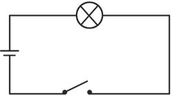
Figure fig_ch03_p055_01 (Page 55)
ക്ലാസ് - VII
3.
ചില പ്രസ്താവനകൾ താഴെ കൊൊടുത്തിരിക്കുന്നു. ശരിയായവ ടിക്ക് () ചെയ്യുക.
• സൂര്യയപ്രകാശം പതിക്കുന്ന ചന്ദ്രന്റെ ഭാഗം ഭൂമിയിൽനിന്ന് പൂർണ്ണമായും കാണാൻ
കഴിയുന്ന ദിവസമാണ് പൗർണ്ണമി.
• വൃദ്ധിയിലെ അർദ്ധചന്ദ്രൻ സൂര്യാാസ്തമയസമയത്ത് തലയ്ക്കുമുകളിൽ ദൃശ്യയമാകും.
• ചന്ദ്രന്റെ പരിക്രമണ കാലയളവും വൃദ്ധിക്ഷയം ദൃശ്യയമാകുന്ന കാലയളവും തുല്യയ
മാണ്.
• കറുത്തവാവ് ദിവസം മാത്രമേ സൂര്യയഗ്രഹണം സംഭവിക്കൂ.
• വെളുത്തവാവ് ദിവസങ്ങളിൽ മാത്രമേ ചന്ദ്രഗ്രഹണം സംഭവിക്കൂ.
• എല്ലാ പൗൗർണ്ണമിദിവസങ്ങളിലും ചന്ദ്രഗ്രഹണം ഉണ്ടാകും.
തുടർപ്രവർത്തനങ്ങൾ
1.
സൂര്യഗ്രഹണം എങ്ങനെയെല്ലാം സംഭവിക്കുന്നു എന്നറിയാന് നമുക്കകൊരു പ്രവർത്ത
നം ചെയ്യാം.
മുന്നനൊരുക്കം
മേശപ്പുറത്ത് ഒരു ഫുട്്ബബോൾ വയ്ക്കുക.
മേശയ്ക്ക് അഭിമുഖമായി ഒന്നര മീറ്റർ അകലത്തിൽ ഒരു കുട്ടിയെ നിർത്തണം.
ചിത്രത്തിൽ കാണുന്നതുപോോലെ ഒരു ചെറിയപന്ത് കമ്പിൽ കുത്തി ഉറപ്പിച്ച് കുട്ടി
കൈയിൽ പിടിക്കട്ടെ.
ഒരു കണ്ണടച്ച് ചെറിയ പന്ത് മറ്റേ കണ്ണിനു മുന്നിൽ ചേർത്തു പിടിച്ച് മേശപ്പുറത്ത്
വച്ചിരിക്കുന്ന ഫുട്്ബബോളിലേക്ക് നോോക്കുക.
• ഫുട്ബോോൾ മാത്രമാണോോ ഇപ്പോോൾ കാഴ്ചയിൽ നിന്നും മറയുന്നത്?
• ചെറിയ പന്ത് സാവധാനം കണ്ണിൽനിന്ന് മുന്നോോട്ട് നീക്കൂ. പന്ത് കാണുന്നതിൽ
എന്ത് മാറ്റമാണ് സംഭവിക്കുന്നത് ?
• ഫുട്ബോോൾ
മാത്രം
പൂർണ്ണമായും
മറയാൻ ചെറിയ പന്ത് കണ്ണിൽ നിന്ന്
എത്രമാത്രം അകലത്തിൽ പിടിക്കണം?
• ചെറിയപന്ത് വീണ്ടും കണ്ണിൽ നിന്നകറ്റി
യാൽ ഫുട്്ബബോൾ മറയ്ക്കുന്നതിൽ എന്തു
മാറ്റമാണ് കാണുന്നത് ?
• ഫുട്ബോോളിനെ ഭാഗികമായി മറയ്ക്കാൻ
ചെറിയ പന്ത് എങ്ങനെ പിടിക്കണം ?
159
Page 56
Figure fig_ch03_p056_01 (Page 56)
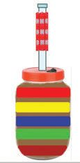
Figure fig_ch03_p056_02 (Page 56)
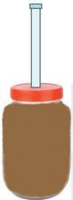
Figure fig_ch03_p056_03 (Page 56)
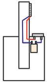
Figure fig_ch03_p056_04 (Page 56)
അടിസ്ഥാനശാസ്ത്രം
ഫുട്ബോൾ പൂർണ്ണമാ
യും മറയുമ്പോൾ
ചെറിയപന്ത് കണ്ണിൽനിന്ന്
കുറച്ചകലെ പിടിക്കുമ്പോൾ
ചെറിയപന്ത് ഫുട്ബോളിനെ
ഭാഗികമായി മറയ്ക്കുമ്പപോൾ
ഫുട്്ബബോളിനെ ചെറിയ പന്ത് മറയ്ക്കുന്ന പ്രവര്ത്തനം ചെയ്തപ്പപോൾ നിങ്ങള് കണ്ട
കാഴ്ചകളെ വിവിധ സൂര്യഗ്രഹണ ചിത്രങ്ങളുമായി താരതമ്യയം ചെയ്തുനോോക്കൂ.
2. ബഹിരാകാശത്ത് ഇന്തത്യയുടെ നേട്ടങ്ങൾ എന്തെല്ലാം? വിവരങ്ങൾ ശേഖരിച്ച് പ്രബന്ധം